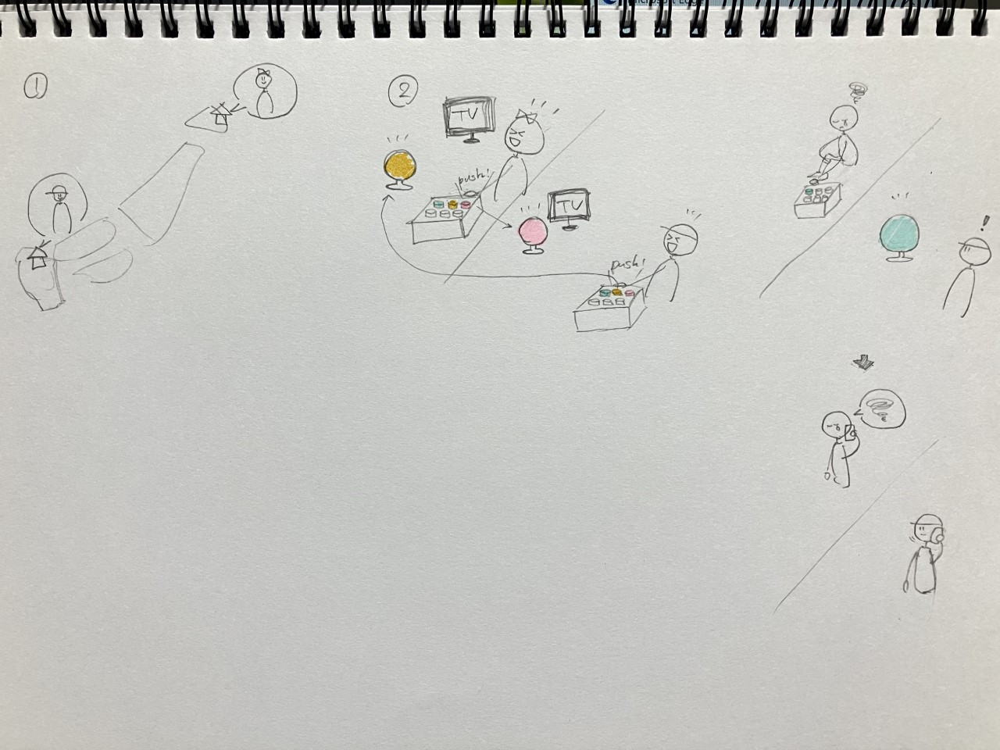

IoT・遠隔操作、管理で何ができるか
＜グループワーク＞
・間違えやすいところを分析してくれる単語帳
・目からスクリーンに映像を投影できるぬいぐるみ
・カメラやセンサーで感知し、家で起きた緊急事態を知らせるもの
・肌の状態をセンサーで判断してスキンケア方法を教えてくれるもの
・捨てるものが何かを判断してどこに捨てればいいか教えてくれるゴミ箱
・植物の成長や健康状態を管理してくれるもの
・自分の健康状態を管理して病院に行かなくても病気を見つけてくれるもの
・必要のない時を判断して電気などを消してくれるもの
・気温などから自分が持っているものの中からその日に適した服を提案してくれるもの
・遠くにいる人と感情を共有するもの(光の色などで感情を表現)
・音量を感知して授業中に私語が増えたときに黒板などに表示がでるもの
・募金するごとに1個ずつLEDが光るオブジェ
グループで出た意見をまとめると
①自分ではできないことをインターネットにやってもらう
②今まで自分でやっていたことをインターネットに任せる
③今までは見えなかったものを可視化する
以上の３つに分けられる。
＜ストーリーボード＞
- 思いやりを可視化するオブジェ
募金箱の近くにLEDでできたオブジェを設置する。
↓
お金を箱に入れた人をセンサーで感知するか、募金した人にQRコード読み込んでもらう。スマホからも募金できるようにする。
↓
1人募金するごとにオブジェのLEDを1つずつ光らせる。
↓
募金する人が増えるとたくさんのLEDが光って、オブジェの形が見えるようになる。
・募金を楽しいイベントにしたい
- 瞬時に離れたところにいる相手に感情を伝えるランプ

ボタンを押すと相手の家にあるランプが光る。
・同じ番組を見ていて、面白いや楽しいなどの感情を瞬間的に共有したいときや、言葉にできないときに使う。
- 変わりに注意してくれるやつ
音量をセンサーで感知して、授業で騒がしくなったときに黒板などに注意を表示してくれる。
・静かにしてほしいけど言いづらい時に役立つ！